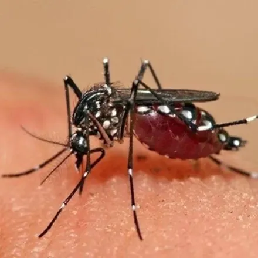
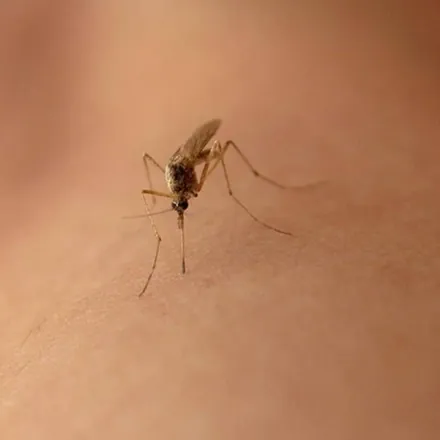
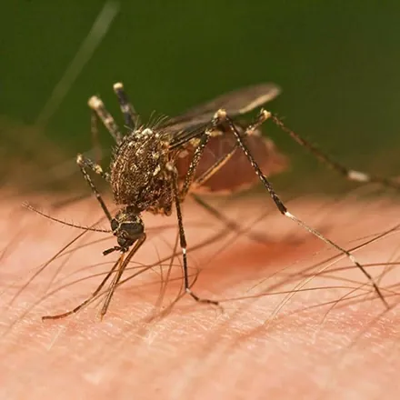

پشه فقط یک مزاحم شبانه نیست؛ از نظر سازمان جهانی بهداشت، پشهها مرگبارترین جانوران جهاناند، چون ناقل بیماریهایی مانند مالاریا و تب دنگی هستند. در کرج هم با گرم شدن هوا، زیرزمینهای نمور، پارکینگها و باغچهها به کارگاه تولید پشه تبدیل میشوند و خواب را از اهالی خانه میگیرند. در این راهنما با انواع پشه، محل تولیدمثل آن، روشهای خانگی و روند سمپاشی تخصصی پشه در کرج آشنا میشوید.
شناخت پشه و انواع رایج آن در ایران
پشهها از راستهٔ دوبالان هستند و بیش از ۳۵۰۰ گونه از آنها در جهان شناسایی شده است. فقط پشهٔ ماده خون میخورد — برای رسیدن تخمهایش به پروتئین خون نیاز دارد — و پشهٔ نر از شهد گیاهان تغذیه میکند. چرخهٔ زندگی پشه چهار مرحله دارد (تخم، لارو، شفیره، بالغ) و سه مرحلهٔ اول آن در آب راکد میگذرد؛ نکتهای که کلید اصلی مبارزه با پشه است: بدون آب راکد، پشهای وجود نخواهد داشت. سه جنس مهم پشه در ایران اینها هستند:
| ویژگی | آنوفل | کولکس (پشه خانگی) | آئدس |
|---|---|---|---|
| اهمیت بهداشتی | ناقل مالاریا | ناقل تب نیل غربی و فیلاریازیس | ناقل تب دنگی و زیکا |
| زمان فعالیت | شب | شب و غروب | روز، بهویژه صبح و عصر |
| حالت نشستن | بدن با زاویه نسبت به سطح | بدن موازی سطح | بدن موازی، پاهای خالخال سیاهوسفید |
| محل تخمگذاری | آبهای راکد تمیز | آبهای آلوده، فاضلاب و کفشور | ظروف کوچک آب مثل زیرگلدانی و لاستیک |
آنچه در خانههای کرج بیشتر میبینید، پشهٔ کولکس است که در آبهای راکد زیرزمینها، چاه آسانسور و کفشورها تکثیر میشود.
نشانههای آلودگی محیط به پشه
- گزشهای شبانه و صدای وزوز هنگام خواب.
- دیدن پشههای نشسته روی دیوار حمام، سرویس و زیرزمین در طول روز.
- مشاهدهٔ لارو (کرمهای ریز متحرک) در آب راکد زیرگلدانی، بشکه یا کف پارکینگ.
- افزایش ناگهانی پشه در واحدهای پایین ساختمان؛ نشانهٔ کانون در زیرزمین، چاه آسانسور یا موتورخانه.
خطرات و بیماریهای منتقله از پشه
گزش پشه علاوه بر خارش و التهاب و گاهی واکنش حساسیتی، میتواند بیماریهای جدی منتقل کند. سالانه صدها میلیون نفر در جهان به بیماریهای پشهزاد مبتلا میشوند:
- مالاریا: توسط آنوفل منتقل میشود؛ در ایران عمدتاً در جنوب و جنوب شرق کشور دیده میشود اما همچنان جدی است.
- تب دنگی و زیکا: توسط آئدس منتقل میشوند؛ گسترش آئدس در سالهای اخیر باعث هشدارهای وزارت بهداشت شده است.
- تب نیل غربی و فیلاریازیس: از طریق پشه کولکس قابل انتقال هستند.
- اختلال خواب و استرس: چند پشه در اتاق خواب کافی است تا کیفیت خواب کل خانواده از بین برود.
راههای پیشگیری از تکثیر پشه
- هر ظرف آب راکد را خالی کنید: زیرگلدانی، سطل، لاستیک قدیمی، بشکهٔ حیاط. آب ظروف پرندگان را هفتگی عوض کنید.
- کفشورهای کماستفاده را با توری یا درپوش ببندید و هفتهای یکبار در آنها آب بریزید تا سیفون خشک نشود.
- آب جمعشده در زیرزمین و پارکینگ را تخلیه و منبع نم را تعمیر کنید.
- توری سالم روی پنجرهها نصب کنید و شبها از پشهبند برای نوزادان استفاده کنید.
- کولر آبی را در پایان فصل تخلیه و خشک کنید.
- باغچه را از علفهای هرز بلند که پناهگاه پشهاند پاکسازی کنید.
روشهای خانگی و محدودیتهای آنها
حشرهکشهای خانگی، قرص و مایعهای برقی، کرمها و اسپریهای دورکننده و گیاهانی مانند اسطوخودوس، همه برای کاهش موقت گزش مفیدند و برای مزاحمت کم تابستانی کفایت میکنند.
اما این روشها دو محدودیت اساسی دارند: اول اینکه فقط پشهٔ بالغ را هدف میگیرند و تا وقتی لاروها در آب راکد زیرزمین یا حیاط در حال رشدند، هر شب نسل تازهای وارد خانه میشود؛ دوم اینکه در ساختمانهای چندواحدی، کانون تکثیر معمولاً در فضای مشترک (چاه آسانسور، موتورخانه، پارکینگ) است و از دست یک واحد بهتنهایی کاری برنمیآید. در این شرایط، سمپاشی هماهنگ و لاروکشی تخصصی تنها راه نتیجهٔ پایدار است.
روند سمپاشی تخصصی پشه در آرام محیط البرز
آرام محیط البرز با مجوز رسمی وزارت بهداشت، درمان و آموزش پزشکی و مدیریت مهندس فاطمه براتی، کارشناس بهداشت محیط، کنترل پشه را در منازل، مجتمعهای مسکونی، رستورانها و باغویلاهای کرج انجام میدهد:
۱. مشاوره و بازدید رایگان
کارشناس کانونهای لاروی (آبهای راکد) و محل استراحت پشههای بالغ را شناسایی میکند و پیش از شروع، برنامه و هزینه را بهصورت شفاف اعلام میکند.
۲. سمپاشی ابقایی و لاروکشی با سم مجاز
دیوارها و سطوح استراحت پشه با سم ابقایی دارای مجوز وزارت بهداشت تیمار میشود و منابع آب غیرقابل تخلیه با لاروکش مجاز کنترل میشوند تا چرخهٔ تولیدمثل قطع شود.
۳. ضمانت کتبی و پیگیری
در پایان، ضمانتنامه کتبی دریافت میکنید و نقاطی که باید خشک یا ترمیم شوند به شما اعلام میشود تا نتیجه ماندگار بماند.
عوامل مؤثر بر هزینه سمپاشی پشه در کرج
- مساحت فضای داخلی و محوطهٔ باز (حیاط، باغچه، پارکینگ).
- تعداد واحدها در مجتمعهای مسکونی و فضاهای مشترک.
- تعداد کانونهای لاروی و نیاز به لاروکشی جداگانه.
- سرویس یکنوبتی یا قرارداد دورهای فصل گرم.
جمعبندی و راه ارتباط
دفع پشه با «کشتن پشههای امشب» فرقی در فردا ایجاد نمیکند؛ راه اصولی، خشکاندن کانونهای لاروی و سمپاشی ابقایی محل استراحت پشههاست. اگر پشه در خانه یا مجتمع شما در کرج بیداد میکند، برای بازدید و مشاوره رایگان با کارشناسان آرام محیط البرز تماس بگیرید: 09193613357 و 026-34209019. اگر گزشها بهجای شب بیرون از خانه، فقط در رختخواب اتفاق میافتد، احتمالاً مشکل ساس تخت دارید؛ و برای همخانوادهٔ روزگردِ این حشره، راهنمای سمپاشی مگس در کرج را ببینید.
سوالات متداول سمپاشی پشه
چرا با وجود توری، باز هم در خانه پشه داریم؟
وقتی با توری سالم باز هم پشه میبینید، یعنی پشهها در داخل یا نزدیکی ساختمان تولیدمثل میکنند: زیر گلدانها، کفشور و چاه آسانسور، آب جمعشده در زیرزمین و پارکینگ، کولر آبی یا بشکههای آب حیاط. پیدا کردن و خشک کردن همین منابع کوچک، مهمترین قدم دفع پشه است.
سمپاشی پشه چه مدت اثر دارد؟
سموم ابقایی که روی دیوارها و محل استراحت پشه اعمال میشوند معمولاً چند هفته اثر خود را حفظ میکنند؛ ماندگاری دقیق به جنس سطح، دما و شستوشو بستگی دارد. اگر منابع آب راکد اطراف حذف شوند، نتیجه بسیار طولانیتر میماند و به همین دلیل کارشناس در بازدید، این منابع را هم شناسایی میکند.
آیا سم پشه برای کودکان و حیوانات خانگی خطر دارد؟
در آرام محیط البرز فقط از سموم دارای مجوز وزارت بهداشت استفاده میشود و دز و محل اجرا متناسب با فضای مسکونی انتخاب میشود. کافی است هنگام سمپاشی و چند ساعت پس از آن، کودکان و حیوانات از فضای سمپاشیشده دور باشند و پس از آن خانه هواگیری شود.
بهترین زمان سمپاشی پشه چه فصلی است؟
بهترین زمان، ابتدای فصل گرما یعنی اواخر بهار است تا جمعیت پشه پیش از اوج تابستان کنترل شود؛ اما در صورت آلودگی فعال، سمپاشی در هر زمان از سال نتیجهبخش است، بهخصوص برای زیرزمینها و پارکینگهایی که در زمستان هم پشه دارند.
هزینه سمپاشی پشه در کرج چقدر است؟
هزینه به مساحت واحد یا مجتمع، فضای باز و محوطه، شدت آلودگی و نیاز به لاروکشی منابع آب بستگی دارد. بازدید و مشاوره کارشناسان آرام محیط البرز رایگان است و قیمت پیش از شروع کار بهصورت شفاف اعلام میشود. برای استعلام با شماره 09193613357 تماس بگیرید.